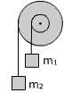
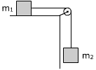
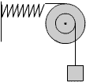

|
Calcula la aceleración angular de la polea, la lineal del bloque y la tensión de la cuerda. La polea tiene radio R y masa M: a) Distribuída homogenéamente b) Concentrada en la periferia |
 |
Calcula la aceleración angular de la doble polea, la lineal de los bloques y las ten-siones de las cuerdas Datos: m1 = 4 kg, m2
= 2 kg, R1 = 20 cm, R2 = 60 cm |
 |
Calcula la aceleración angular de la doble polea, la lineal de los bloques y las ten-siones en los extremos de la cuerda Datos de la doble polea: Radios: R1, R2, Momento de inercia: I |
 |
Calcula la aceleración
angular de la polea, la lineal de los bloques y las tensio-nes en
los extremos de la cuerda |
Un bloque de 10 kg cuelga de una cuerda arrollada
a una polea de radio 5 cm que está pegada a otra polea de radio
20 cm compartiendo ambas el mismo eje. En la polea de mayor radio se aplica
tangen-cialmente una fuerza de 25 N para hacer subir el bloque.
Siendo el momento de inercia de la doble polea 750 kg·cm2,
calcula la aceleración angular de la polea
|  |
El sistema se encuentra en equilibrio. Determina la elongación del muelle Datos: m =10 kg, R1 = 40 cm, R2 = 20 cm, k = 5 kp/cm |
Un volante adquiere rotación por el peso de un cuerpo de 8 kg, suspendido de una cuerda arrollada a su eje de 10 cm de radio. El peso recorre 2 m en 4 s. Calcula el momento de inercia del volante
Un cilindro hueco, M = 10 kg, R = 30 cm, gira alrededor de un eje horizontal por la acción de una pesa, m = 0.2 kg, que cuelga del extremo de una cuerda que se va desenrollando. Calcula la aceleración angular del cilindro
En una rueda de radio 50 cm, con un eje horizontal que pasa por su centro, se ha enrollado una cuer-da de la que cuelga un cuerpo de masa 5 kg. La rueda está formada por un anillo uniforme de 5 kg y varios radios de masa despreciable Calcula:
a) La tensión de la cuerda
b) Tiempo que tarda en desenrollarse 1
m de cuerda